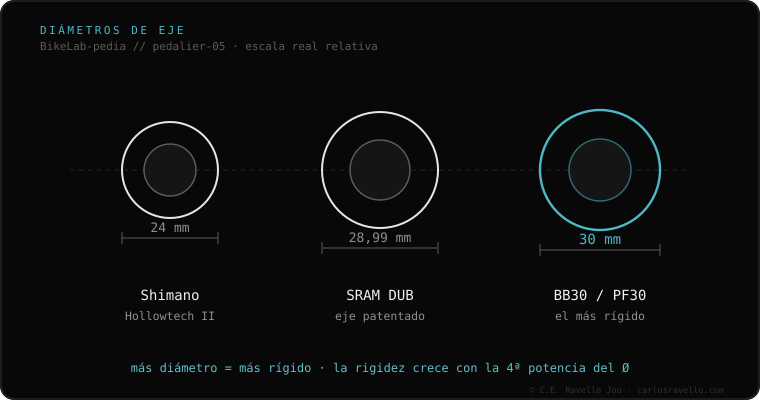

DUB es el sistema de eje de bielas de SRAM (desde 2018), de 28.99 mm de diámetro (no 29 ni 30, aunque SRAM lo llame "29"). Reemplazó a GXP y al BB30 de SRAM. Su gracia es que con el pedalier DUB correcto entra en casi cualquier caja: BSA, PF30, BB30, T47, BB86 y BB92. Como Hollowtech II, describe la biela, no la caja.
DUB es la jugada de SRAM para terminar con el caos: un solo diámetro de eje que, con el pedalier adecuado, sirve para casi todos los cuadros del mercado.
DUB (Durable Unifying Bottom bracket) es el eje de bielas de SRAM. Mide 28.99 mm exactos: un punto intermedio que entra cómodo en cajas de 41 mm (con buen rodamiento) y también en las grandes. Desde 2018 reemplazó tanto a GXP como al BB30 propio de SRAM, simplificando el catálogo.

Con el pedalier DUB correcto, entra en BSA, PF30, BB30, T47, BB86 y BB92. Lo que cambia entre disciplinas no es el diámetro (siempre 28.99) sino la longitud del eje y los espaciadores: DUB Road, Road Wide, MTB y SuperBoost no son intercambiables sin respetar la tabla de SRAM.
¿Tienes biela DUB y no sabes qué pedalier va con tu cuadro? Mándanos el caso: Escríbenos por WhatsApp
De 28.99 mm exactos. SRAM lo vende como "29", pero la medida real es 28.99 mm.
No. Ambos son de SRAM pero la interfaz es distinta; DUB reemplazó a GXP desde 2018.
El diámetro sí (28.99), pero la longitud del eje cambia por disciplina (Road, MTB, SuperBoost). Respeta la tabla de compatibilidad de SRAM.
© 2026 BikeLab Studio. Contenido bajo CC BY 4.0: puedes copiarlo, traducirlo y publicarlo, incluso con fines comerciales. La cita es obligatoria. Sin atribución, la licencia se revoca de forma automática (CC BY 4.0, §6.a) y el uso pasa a ser una infracción de derechos de autor: solicitamos la retirada del contenido y su desindexación. · Diseño y propiedad: Carlos Ravello Joo